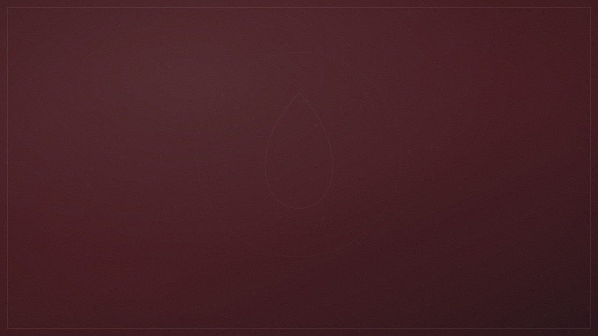

Maison Mirenza — Paris
L’intime,
L’intime,
réinventé.
Une Maison de santé intime et d’innovation, où la matière, la recherche et le design se rencontrent pour concevoir autrement le quotidien des femmes.
Maison Mirenza — manifeste
Notre champ d’action
Concevoir pour l’intime. Rechercher au-delà du produit.
La Maison s’organise autour de créations, de recherche appliquée et de programmes consacrés aux problématiques de santé féminine.
Endométriose
Un axe de recherche et de développement distinct, présenté avec ses statuts et ses preuves.
Découvrir l’axeLes Créations
Un portefeuille appelé à grandir.
Le site ne publie que les familles prêtes à être montrées. Les futures créations sont déjà prévues dans le modèle de données, sans fausses pages « bientôt ».

Santé menstruelle / Lingerie menstruelleLingerie menstruelle
Le premier chapitre commercial de la Maison.
DécouvrirLes épaisseurs
Des questions aux objets.
Une question · Une matière · Un protocole · Un prototype · Une création.
Chapitre 01 — Lingerie menstruelle
Trois niveaux. Deux coupes. Un choix immédiat.
Le moteur de choix par flux intervient ici, et uniquement ici. Les capacités chiffrées ne s’affichent qu’une fois validées ; jusque-là, nous présentons les niveaux et leur usage.
Light
Flux léger
Capacité en cours de validationEn validation
Regular
Flux modéré
Capacité en cours de validationEn validation
Night
Flux abondant
Capacité en cours de validationEn validation
L’univers en mouvement
Des territoires, avant des rayons.
Des directions de création qui disent la Maison par la matière et la lumière. Les produits sont présentés dès qu’ils existent ; ici, l’intention.
Le soin — l’eau
L’huile précieuse
Le baume — velours
La nuit
Mirenza Lab
La science de l’intime.
Le Lab est plus vaste que la lingerie : matière, confort, usage, vieillissement, santé féminine, endométriose et innovations en développement.
Comprendre ce qui touche le corps : fibres, tissages, interfaces avec la peau, respirabilité.
Gestion des fluides, transfert, rétention, tenue dans la durée et en mouvement.
Observer le réel avant de concevoir : ergonomie, ressenti, gestes du quotidien.
Vieillissement, entretien, tenue des matières lavage après lavage.
Besoins de santé intime, tolérance, qualité de vie au quotidien.
Un axe de recherche et de développement consacré aux besoins liés à l’endométriose.
Endométriose
Rechercher au-delà du visible.
Maison Mirenza consacre un axe de recherche et de développement aux besoins liés à l’endométriose et participe à des programmes de recherche sur ce sujet. La communication publique distingue toujours recherche, prototype et bénéfice validé.
Découvrir nos travaux
Film 03 — Endométriose45–60 s · quotidien + recherche · aucun cliché de douleur
Méthode & preuve
La recherche n’est pas un slogan.
Les contenus publics sont séparés selon leur statut : recherche, validation, résultat publié. Un axe R&D ne devient jamais automatiquement un bénéfice produit.
Comment nous travaillons.
Ce que nous étudions.
Ce qui peut être publié.
Ce qui peut être rendu public.
En pharmacie
Un canal d’accès, pas une identité de marque.
Les règles de prise en charge sont affichées uniquement pour les produits concernés et restent centralisées dans les données réglementaires.
Les Cahiers Mirenza
Matière, recherche, santé féminine.
Le journal réunit santé menstruelle, endométriose, matières, recherche, innovation et coulisses de la Maison.

Construire une Maison avant de construire une boutique
Pourquoi Maison Mirenza a choisi de commencer par une culture de recherche, et non par un catalogue.
20.08.2026Ce que l’on ne voit pas : la matière au contact de la peau
Douceur, respirabilité, tenue dans le temps : ce que nous regardons avant de retenir un textile.
12.08.2026Rechercher au-delà du visible
Notre approche de l’endométriose : écouter, chercher et documenter, sans promettre avant de savoir.
04.08.2026
Maison Mirenza
L’intime, réinventé.